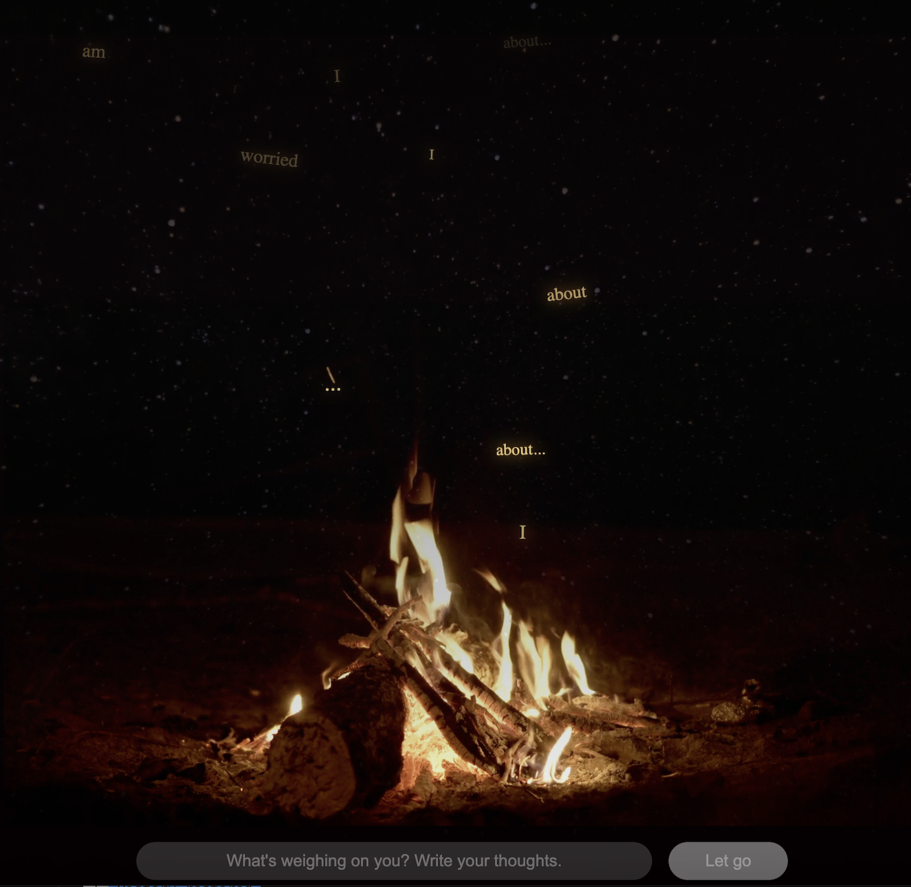

A calming, browser-based experience where you can write a worry, a thought, or a feeling and watch it dissolve into the fire.
Campfire Counsellor is a personal, self-directed project I built to explore creative frontend development and interactive animation. The idea was simple and inspired by my yearly winter camping trips with friends. It has meaningful connections to both my personal and professional life. I believe that being present with nature is therapeutic and healing, and although ironically it is through a screen, I hope the app brings purpose to those who need it and can't leave their desks.
The app takes whatever you write, breaks it into individual words, and animates each one rising from a campfire. The words float upward and fade into the night sky. The experience is intentionally designed to be slow and gentle. If you have no thoughts to share, that's ok. Simple enjoy watching the campfire and adjust the sounds and music to your liking.
Campfire Counsellor is entirely frontend. There is no backend, no database, no accounts. Just you, the fire, and whatever you need to let go of. The project also gave me the chance to experiment with things I hadn't tried before: looping video backgrounds, Web Animations API, and layered ambient audio to build an immersive experience.

The core interaction of splitting a sentence into words and animating each one separately required a custom animation system. Claude assisted with building a Web Animations API to give each word its own keyframe timeline, with randomised duration, drift, rotation, and spread so no two words move the same way.
Choosing to use no frameworks and no backend meant solving everything with HTML, CSS, and JavaScript. This constraint pushed me to write cleaner, more intentional code and gave me a deeper understanding of core browser technologies and behaviours.
Initially, I planned to allow users to add their own Spotify or YouTube music through links. During development, I realised this introduced several limitations, including no volume control, browser sandboxing constraints, and inconsistent user experience across platforms. Rather than adding a feature with limited functionality, I decided to create a curated library of ambient sounds that users could mix, control independently, and adjust in real time.